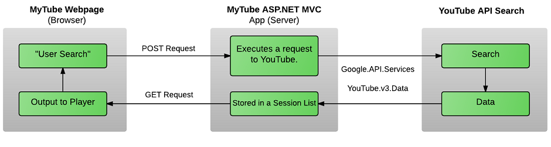

So I was recently introduced to the world of API’s and it’s amazing how much information has been made available to developers. It has been fun and I’m excited for some of the projects I have planned.
MyTube is the first of those projects. I had originally done this project only in html and javascript with no back end. You can find that version under my javascript blogs. MyTube allows you to search YouTube from my webpage. You enter a search item and 20 videos are sent back meeting your search parameters. YouTube have many API’s and ways of interacting with their data, but I decided to use their general search API.
Below is a diagram of MyTube’s data flow:
A POST request is sent in Ajax to my ASP.Net web API. ASP.Net is responsible for forming a query and sending that query to YouTube via Google and YouTube API services. The first 20 videos meeting the criteria are sent back from YouTube. There is a fair amount of data attached to one video, but I only save the title and video id to a session list. The backend is all done using C#. Upon the POST request being successful a GET function is run, which hits the GET API on my ASP.Net web API. This goes and fetches the data from the session list and saves it into a javascript array. Javascript is responsible for storing that data and loading the player accordingly. This whole cycle is triggered when a user submits a search item.
The player and elements required for it are added and removed using javascript. The html only holds the class name “player” in a div that everything gets attached to.
Authentication can be key for accessing data from API’s. There are 2 ways of authenticating yourself to a web API. One is using a Key generated specifically for you or OAuth2 authentication. So I have a key for my YouTube search that I was given when I registered the application on my google developers console. I also have OAuth2 credentials as I learnt how to set up google OAuth2 on ASP.Net. I’m not using it for this version of MyTube though.
I also learnt a bit about ASP.Net Web API help pages. I manage to edit some of it, but there is more I’d like to still do.
I would say those are the main components to this Web API. I enjoyed playing around with the CSS and getting some style going.